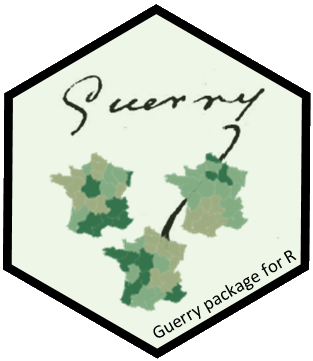
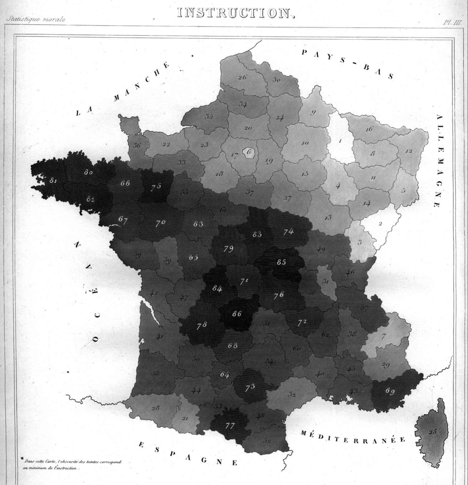
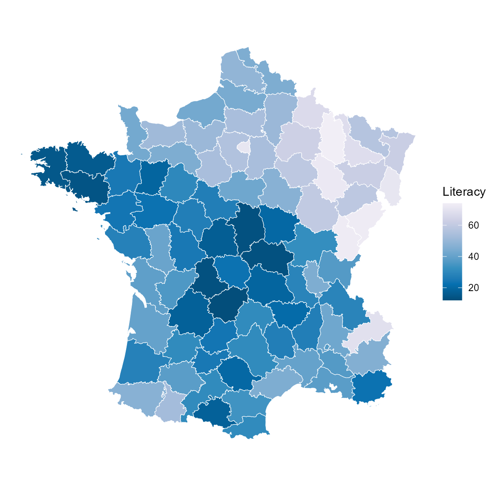
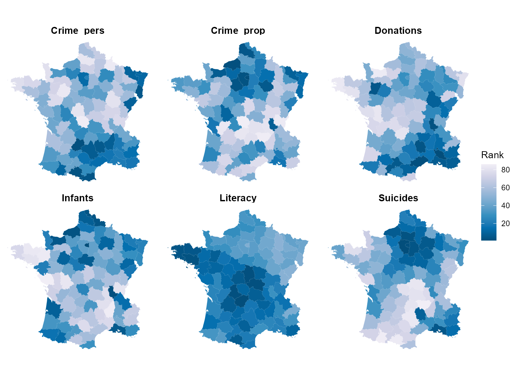
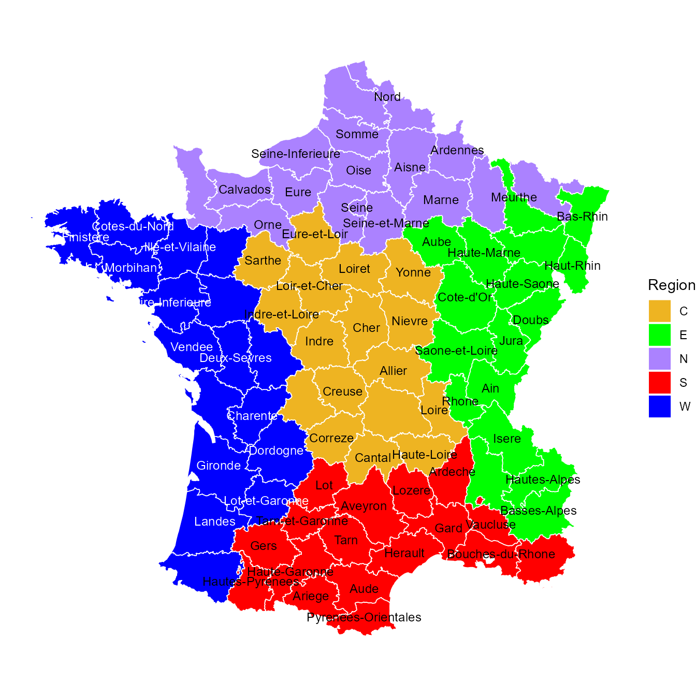

Guerry data: Maps with sf and ggplot2
Michael Friendly
2026-09-13
Source:vignettes/guerry-sf-maps.Rmd
guerry-sf-maps.RmdThe maps in this package (gfrance,
gfrance85) were originally built as sp
SpatialPolygonsDataFrame objects, and the other vignettes
and the README use the older sp::spplot() function to
display them. The current standard toolchain for spatial visualization
in R is the sf package,
together with ggplot2::geom_sf(). This short vignette shows
how to work with Guerry’s map data that way.
This doesn’t replace the sp/spplot()
examples used elsewhere in the package – both remain fully supported –
it’s simply the modern alternative for anyone building on
Guerry’s map data in a ggplot2 workflow.
library(Guerry)
library(sf)
library(ggplot2)
library(dplyr)
library(tidyr)
data(gfrance85)
data(Guerry_ranks)Converting to sf
Converting the package SpatialPolygons sp object to use
the Simple Features, sf, representation is a single call to
sf::st_as_sf():
gf_sf <- st_as_sf(gfrance85)
class(gf_sf)
#> [1] "sf" "data.frame"
names(gf_sf)
#> [1] "dept" "Region" "Department" "Crime_pers"
#> [5] "Crime_prop" "Literacy" "Donations" "Infants"
#> [9] "Suicides" "MainCity" "Wealth" "Commerce"
#> [13] "Clergy" "Crime_parents" "Infanticide" "Donation_clergy"
#> [17] "Lottery" "Desertion" "Instruction" "Prostitutes"
#> [21] "Distance" "Area" "Pop1831" "geometry"The result is an ordinary data frame – all the usual
Guerry variables are still there as columns – with one
addition: a geometry list-column, where each row holds the
polygon (or multi-polygon) boundary for that department as an
sfc object, instead of a separate @polygons
slot as in the sp representation.
Because it’s just a data frame, it can be manipulated with the usual
tools (dplyr, tidyr, …) before plotting, and
geom_sf() knows to look for a geometry column
automatically.
We’re using gfrance85 here (rather than
gfrance), so Corsica – geographically distant from the
mainland and excluded from the Region classification – is
not shown in any of the maps below.
A basic map
geom_sf() handles the geometry column automatically to
draw the map. There’s no need to supply x/y
aesthetics. You can supply attributes like fill and
color. For maps, theme_void() is often the
most sensible choice for overall styling.
ggplot(gf_sf) +
geom_sf(fill = "grey90", color = "white") +
theme_void()
Choropleth maps
Mapping a variable to fill gives a
choropleth map, shading the departments according to the values of that
variable. This is a good example of how the “Grammar of Graphics” (Wilkinson (1999)) helps you think about the
task that Guerry worked on for each of his maps, laboriously translating
the values of a moral variable into visible tints.
In this example, Literacy (percent of military
conscripts who could read and write) is mapped to a PuBu
palette, the same one used elsewhere in this package.
Literacy is one of the variables Guerry recorded so that a
higher value is morally better;
following the convention of his own (black-and-white) maps, where
“worse” printed darker, direction = -1 makes low (bad)
values dark and high (good) values light.
This isn’t just an assumed convention – it’s exactly what Guerry says
himself. His original 1833 map of the closely related
Instruction variable (Plate III of the Statistique
morale) carries this footnote: “Dans cette carte, l’obscurité
des teintes correspond au minimum de l’instruction” – “In this map,
the darkness of the tints corresponds to the minimum of instruction
[literacy]”:

ggplot(gf_sf) +
geom_sf(aes(fill = Literacy), color = "white", linewidth = 0.2) +
scale_fill_distiller(palette = "PuBu", direction = -1, name = "Literacy") +
theme_void()
The historically low-literacy departments of Brittany and central France stand out as the darkest; the generally more literate northeast is lightest – the same departments that are darkest in Guerry’s own hand-tinted map above.
Note that the numbers on Guerry’s map are his own rank
labels for Instruction, where 1 is the best (lightest)
department – the opposite direction from Guerry_ranks in
this package (see below), which is worth keeping in mind if you compare
the two directly.
Small multiples of the main variables
The package README shows a static image of six choropleth maps of
Guerry’s main “moral variables”. Here is a living, code-generated
version of the same idea, using facet_wrap() and the
pre-ranked Guerry_ranks data set.
Guerry_ranks gives each variable’s plain ascending rank
(dplyr::dense_rank(), so ties share a rank and the maximum
rank can be less than 86): rank 1 is always the
smallest raw value, and the largest rank is the
largest raw value. Because these variables are already
recoded so that a larger raw value is morally better (as above), rank 1
is the worst department on that variable, and the highest rank
is the best – the reverse of the raw-value case, even though
it’s the same underlying idea. To keep “worse = dark, better = light”
consistent with the previous figure, direction has to flip
along with it: direction = -1 on the rank scale makes the
low rank (worst) dark and the high rank (best) light.
main_vars <- c("Crime_pers", "Crime_prop", "Literacy", "Donations", "Infants", "Suicides")
ranks_sf <- gf_sf |>
select(dept) |>
left_join(Guerry_ranks |> select(dept, all_of(main_vars)), by = "dept") |>
pivot_longer(cols = all_of(main_vars), names_to = "variable", values_to = "rank")
ggplot(ranks_sf) +
geom_sf(aes(fill = rank), color = NA) +
facet_wrap(~ variable) +
scale_fill_distiller(palette = "PuBu", direction = -1, name = "Rank") +
theme_void() +
theme(strip.text = element_text(size = 11, face = "bold"))
Comparing the Literacy panel here with the
single-variable choropleth above confirms the two now agree: the same
departments read dark (worse) and light (better) in both.
Region map with department labels
Finally, a map colored by Region, with department names
added via geom_sf_text() – the
sf/ggplot2 equivalent of the
plot() + text() approach used for this same
map in the README.
col.region <- colors()[c(149, 254, 468, 552, 26)] # same colors used in the README
ggplot(gf_sf) +
geom_sf(aes(fill = Region), color = "white", linewidth = 0.3) +
geom_sf_text(aes(label = Department, color = Region == "W"),
size = 3.2, check_overlap = TRUE) +
scale_color_manual(values = c(`FALSE` = "black", `TRUE` = "white"), guide = "none") +
scale_fill_manual(values = col.region) +
theme_void()
Next steps
A themed, styled version of these maps using the historical color
palettes and patterns of the ggCheysson
package is planned once that package reaches CRAN.